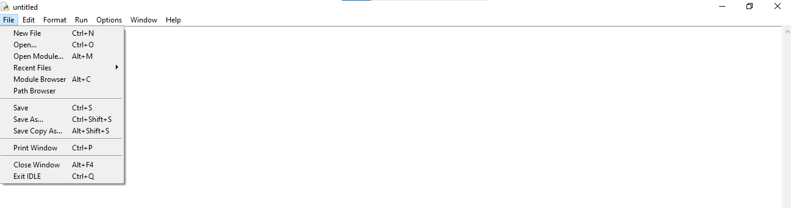
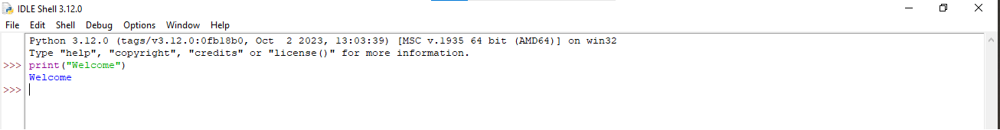

CHAPTER 1
PYTHON BASIC
1.1 Python Introduction
Python एक interpreted object oriented programming language है। Python बहुत papular, simple तथा सीखने में आसान programming language है, जिसमे हम सामान्य english में code करतें है। यह सामान्य english के code नये programmer को programming को सीखने तथा समझने में help करते है। जिसने programming नही सीखी है वह भी python को आसानी से सिख सकता है। Python ऐसे users के लिए उपयोगी है, जो सिर्फ अपना काम करना चाहते है। जैसे - Machine Learning, Web Development, Software Development, Data Science इत्यादि क्युकि इसमें ज्यादा hard code नही करना होता है।
Python एक interpreted, object oriented एवं high level programming language है, जिसके syntax बाकी language की तुलना मे सरल होते है। python एक free एवं open source programming language है।
History of Python
Python का आविष्कार सन् 1991 में Guido van Rossum द्वारा Netherlands में किया गया था। इसके बाद 1994 python1.0 relaese किया गया तथा 2008 python2 एवं python3 relaese किया गया, जिसका use आज कल Software Industry में काफी ज्यादा हो रहा है।
1.2 Features of Python
1. Easy to Learn and Implement - Python एक सरल programming language है, क्युकि इसके syntax बाकी language की तुलना में सरल होते है। Python में semicolon “;” और curly brackets “{ }” लगाने की जरुरत नही होती है।
2. Free and Open Source - Python एक free programming language है, जिसको python.org से download किया जा सकता है। इसके साथ ही python का source code public के लिए उपलब्ध रहता है, जिसे download करके share भी किया जा सकता है।
3. Object Oriented Programming Language - Python एक object oriented programming language है, जिसमे class तथा object का use करके oops के concept जैसे - inheritance, encapsulation आदि use किये जा सकते है ।
4. High Level Programming Language - High level programming का अर्थ होता है कि इसमें english के words use किये जाते है जो हमारे लिए सिखने और समझने में आसान होते है।
5. Portable - Python एक portable programming language है, जिसमे एक operating system पर बनाये गये program दुसरे operating system पर आसानी से run किये जा सकते है।
6. GUI Programming – Python एक GUI programming है, जिसमे coding करने के लिए graphical user interface का use किया जाता है अर्थात् इसमें graphical application बनाई जा सकती है।
7. Interpreted Language – Python एक interpreted language है, जिसमे code को line by line check किया जाता है और इससे debugging करना आसन होता है।
8. Large Standard Library – Python में बड़ी संख्या में standard library होती है। यह library बहुत ही portable तथा cross-platform compatible है। इनका use करके हम अलग-अलग क्षेत्रो से सम्बन्धित application को आसानी से develep कर सकते है। जैसे – Data Science, Machine Learning, Mobile Application etc.
9. Dynamically Typed Language – Python एक dynamically typed language है, जिसमे हमे data type declare करने की आवश्यकता नही होती है। यह variable कर type को अपने आप detect कर लेता है।
10. Frontend and Backend Develepment – Python software development करने के लिए frontend तथा backend दोनों सुविधाएं प्रदान करता है।
1.3 Installation of Python in Windows
हमारे computer मे python को install करने के लिए अलग अलग दो version होते है, जो निम्न है -
1. Window 10 and 11 python latest version (python 3.12.0)
2. Window 7 python 2.7.15
Python को Installation करने की step निम्न है -
1. सबसे पहले python को www.pytho.org/ website से download करेंगे। इसके लिए Google search box मे "download python" लिखेंगे। तथा python.org site से free download पर click करेंगे।
2. अब download किये हुए setup पर double click करेंगे, जिससे installation शुरु होगा।
3. अब next button पर click करेंगे।
4. Next पर click करेंगे एवं "add python exe to PATH" को जरुर select करेंगे।
5. Next पर click करेंगे।
6. अंत मे finish button पर click करेंगे।
1.3.1 Python IDE Open करना
Python को open करने के लिए निम्न step होती है।
1. सबसे पहले Start > all programs > python > IDLE (python GUI) को open करेंगे।
2. नया program बनाने के लिए file > new file पर click करेंगे।
3. इससे एक नई window open होती है जिसे program type करेंगे जैसे - print('welcome')
4. अब program को save करेंगे। File > Save > Welcome.py > save पर click करेंगे।
5. अन्त में program को run करेगें। Run > Run Module (F5) जिससे Output आ जाएगा।
Q 1. Write a program to print welcome in Python.
print("Welcome")
Output : Welcome
Q 2. Write a program to print "Twinkle twinkle little star" poem in python.
print('''Twinkle, twinkle, little star,
How I wonder what you are!
Up above the world so high,
Like a diamond in the sky.''')
Output
Twinkle, twinkle, little star,
How I wonder what you are!
Up above the world so high,
Like a diamond in the sky.
Q 3. Write a program to sum of two number.
a = 5
b = 10
c = a + b
print("The sum = ",c)
Output
The sum = 15
Q 4. Write a program to sum of two number using input function.
a = int(input("Enter first number"))
b = int(input("Enter second number"))
c = a + b
print("The sum of two number = ",c)
Output
Enter first number 5
Enter second number 2
The sum of two number = 7
Q 5. Write a program to calculate simple interest using input function.
p = float (input("Enter principle"))
r = float (input("Enter rate"))
t = float (input("Enter time"))
si = (p * r * t) / 100
print("The simple interest = ",si)
Output
Enter principle 2000
Enter rate 3
Enter time 4
The simple interest = 240.0
Q 6. Write a program to calculate simple interest using input function.
a = int(input("Enter the value of a"))
b = int(input("Enter the value of b"))
c = int(input("Enter the value of c"))
if a > b and a > c:
print("A is greater")
elif b > a and b > c:
print("B is greater")
else:
print("C is greater")
Output
Enter the value of a 10
Enter the value of b 30
Enter the value of c 20
B is greater
1.4 Python Interpreter
Python interpreter एक program या translator होता है, जो high level language में लिखे गये code को machine language में बदलता है।
Interpreter code को line by line interpret करता है. जबकि compiler पुरे code को एक साथ compile करता है।
How does python interpreter work?
Python interpreter के कार्य करने की निम्न steps होती हैं –
1. Code को पढ़ना – इसमे interpreter पहले से लिखे गए python code को पढ़ता है।
2. Parsing – इसमे interpreter syntax की जाच करता है।
3. Execution – इसमे interpreter code को execute करता है।
4. Result display करना – यदि code सही है, तो Output display करता है।
1.5 Python Editor
1. IDLE (Integrated Development Learning Environment)
GUI (Graphical User Interface)
2. Interactive Mode / REPL / Python Shell
3. Text Editor (VS Code)
4. Command Prompt (Using Notepad)
5. Mobile Application (python3)
6. Online Compiler (programiz.com)
1. Python IDLE (GUI)
IDLE का पूरा नाम Integrated Development and Learning Environment होता है। ये python का एक GUI होता है, जिसमे हम program को बनाते है, save करते है तथा उसे run करते है।
जब हम python install करते है, तब python package के साथ ही एक default editor भी install होता है, जो की python shell होता है। इस python shell के माध्यम से हम सम्पूर्ण python program को भी create करके execute कर सकते है और किसी एक single python statement को भी execute करके उसका Output देख सकते है, ये IDLE python shell निम्नानुसार दिखाई देता है -

इस IDLE के file menu से new option को select करके हम एक new file के रूप मे python program create कर सकते है, जिसका extension “.py” होता है और फिर उस python program को इसी python shell के माध्यम से execute भी कर सकते है। इसके लिए "Run Module F5" menu option को click करके अथवा keyboard से F5 function key press करके उस script file को execute भी कर सकते है।

2. Intractive Mode / Python Shell / REPL
यह python का interpreter होता है, जिसे >>> द्वारा दर्शाया जाता है। इसमें भी हम program type करके run किया जा सकता है। इसे REPL (Read Evaluate Print Loops) भी कहा जाता है। क्यूकी यह दी गई value को read करता है, फिर calculate करता है तथा pirnt करता है और अंत में पुन: loops में आ जाता है।
जैसे -
>>> 5 + 6
Output - 11
3. Text Editor (VS Code)
Python program को बनाने एवं run करने के लिए VS code (Visual Studio Code) का use भी किया जाता है। VS code एक प्रकार का text editor है, जो program को बनाने एवं उसे run करने की सुविधा प्रदान करता है।
4. Command Prompt (Using Notepad)
Python program को interepret करने के लिए dos command prompt का भी उपयोग किया जाता है। इसके लिए notepad में program बना कर उसे computer में किसी भी location पर save किया जाता है तथा command prompt पर "python" command से run किया जाता है।
जैसे -
1. Notepad open करे एवं program type करे।
2. File menu से save करें। जैसे - Hello.py
3. Command prompt open करें और program को run करने के लिए निम्न command type करें।
python Hello.py
1.6 Python Conditional Statement (Decision Making Statement)
Python में conditional statement का use decision लेने के लिए किया जाता है। making statement इसमें conditional statement का syntax C, C++ तथा Java से थोड़ा अलग होता है। इन statement का use program मे किसी condition को check करने के लिए किया जाता हैं। यदि condition true होती हैं तो statements execute होते हैं।
Python में निम्न conditional statement होते हैं -
1. Simple if Statement
2. If...else Statement
3. Nested if Statement
4. Chained Conditional Statement (if – elif – else ladder)
1. Simple if Statement
यह एक सामान्य if statement होता हैं, जिसमें if के बाद condition लिखी जाती हैं तथा condition के बाद colon “:” लिखते है। जिसे indentation कहा जाता है यह indentation if के block को दर्शाता है। यदि condition true होती है, तो statement execute होता हैं अन्यथा नही।
Syntax
if condition :
Statement
Example
if a > 5 :
print("A is greater than 5")
Q 1. Write a program for Simple if.
a = 10
if a > 5 :
print("A is greater than 5")
Output
A is greater than 5
Program 2
a = 5
if a > 5 :
print("A is greater than 5")
print("I Love Python")
print("Thanks you")
Output
I Love Python
Thanks you
* Note – if statement की body को दर्शाने के लिए indentation का use किया जाता है अर्थात् if के अंदर वाले statement को (tab) button के साथ लिखा जाता है। यदि indent नहीं दिया जाता है, तो वह if के बाहर मान्य होता है।
2. if else Statement
यह एक two way decision making statement होता है, जिसमें if की condition false होने पर else block execute होता है।
Syntax
if condition :
statement 1 (executed when if is true)
else :
statement 2 (executed when if is false)
Example
if a > b :
print("A is Greater")
else :
print("B is Greater")
Q 2. Write a program to print the greater number between two number using if else.
a = int (input("Enter the value of a"))
b = int (input("Enter the value of b"))
if a > b :
print("A is Greater")
else :
print("B is Greater")
Output
Enter the value of a 8
Enter the value of b 9
B is Greater
short hand if
a = 2
b = 330
print("A") if a > b print("B")
Output : B
3. if elif else Statement
इस प्रकार के if else को chained if...else भी कहा जाता है। इसमें if की condition false होने पर फिर से दूसरी condition को check किया जाता है।
Syntax
if condition :
statement 1
elif condition :
statement 2
else :
statement 3
Example
if a > b and a > c :
print("A is Greater")
elif b > a and b > c :
print("B is Greater")
else :
print("C is Greater")
Q 3. Write a program to print greater number among three numbers using if elif else.
a = int (input("Enter the value of a"))
b = int (input("Enter the value of b"))
c = int (input("Enter the value of c"))
if a > b and a > c :
print("A is Greater")
elif b > a and b > c :
print("B is Greater")
else :
print("C is Greater")
Output
Enter the value of a 8
Enter the value of b 7
Enter the value of c 9
C is Greater
4. Nested if Statement
जब एक if के अंदर दूसरे if का use किया जाता है। तब इसे Nested if कहा जाता है। अर्थात् इसमें if statement की body के अंदर पुनः if statement लिखा जाता है।
Syntax
if condition :
if condition :
statement 1
else :
statement 2
else :
statement 3
Example
if a > b :
if a > c :
print("A is Greater")
else :
print("C is Greater")
else :
if b > c :
print("B is Greater")
else :
print("C is Greater")
Q 4. Write a program to print greater number among three numbers using Nested if else.
a = int (input("Enter the value of a"))
b = int (input("Enter the value of b"))
c = int (input("Enter the value of c"))
if a > b :
if a > c :
print("A is Greater")
else :
print("C is Greater")
else :
if b > c :
print("B is Greater")
else :
print("C is Greater")
Output
Enter the value of a 10
Enter the value of b 5
Enter the value of c 1
A is Greater
1.7 Python Operator
1.7.1 Types of Operator
Operator एक symbol होता है, जो computer मे arithmetic या logical कार्य करता है।
Python मे use होने वाले Operators निम्न है -
1. Arithmetic Operators
2. Assignment Operator
3. Comparison Operators / Relational Operators
4. Logical Operators
5. Identity Operators
6. Membership Operators
7. Bitwise Operators
1. Arithmetic Operators
Arithmetic operators का use python मे numerical value मे calculation करने के लिए किया जाता है।
Python मे use होने वाले Arithmetic Operators निम्न है-
x = 5, y = 2
| SN |
Operator |
Name |
Example |
Result |
| 1. |
+ |
Addition |
x + y |
7 |
| 2. |
- |
Subtraction |
x - y |
3 |
| 3. |
* |
Multiplication |
x * y |
10 |
| 4. |
/ |
Devition |
x / y |
2.5 |
| 5. |
% |
Modules |
x % y |
1 |
| 6. |
** |
Exponentiation (Power) |
x ** y |
25 |
| 7. |
// |
Floor division (Integer) |
x // y |
2 |
Q 1. Write a program to all Arithmetic operators.
a = 5
b = 2
print(a + b)
print(a - b)
print(a * b)
print(a / b)
print(a % b)
print(a ** b)
print(a // b)
Output
7
3
10
2.5
1
25
2
2. Assignment Operators
Assignment Operators का use variable को value assign करने के लिए किया जाता है। Assignment Operators दो प्रकार के होते है -
1. Simple assignment operators (=)
2. Compound assignment operators (+=, -=, *=, /=)
1. Simple Assignment Operators - इसमें केवल equal to operator का use किया जाता है।
जैसे - a = 5
2. Compound Assignment Operators - इसमें दो या दो से अधिक operators का use किया जाता है। जैसे –
a = 3
a += 5 (a = a + 5)
Output 8
Compound Assignment Operators निम्न है –
x = 5
| SN |
Operator |
Example |
Same As |
Result |
| 1. |
= |
x = 5 |
x = 5 |
5 |
| 2. |
+= |
x += 3 |
x = x + 3 |
8 |
| 3. |
-= |
x -= 3 |
x = x - 3 |
5 |
| 4. |
*= |
x *= 3 |
x = x * 3 |
15 |
| 5. |
/= |
x /= 3 |
x = x / 3 |
5 |
| 6. |
%= |
x %= 3 |
x = x % 3 |
2 |
Q 2. Write a program for all assignment operators.
a = 5
a += 3
print(a)
a -= 3
print(a)
a *= 3
print(a)
a /= 3
print(a)
a %= 3
print(a)
Output
8
5
15
5.0
2.0
3. Relational Operators / Comparison Operators
Python में comparison operators का use variables की value को compare करने के लिए किया जाता है।
Python में use होने वाले comparison operator निम्न है –
x = 10, y = 5
| SN |
Operator |
Name |
Example |
Result |
| 1. |
== |
Equality |
x == y |
False |
| 2. |
!= |
Not equal |
x != y |
True |
| 3. |
> |
Greater than |
x > y |
True |
| 4. |
< |
Less than |
x < 3 |
False |
| 5. |
>= |
Greater than equal |
x >= 3 |
True |
| 6. |
<= |
Less than equal |
x <= 3 |
False |
Q 3. Write a program to all Comparison Operators.
# Program for all comparison operator in python
x = 10
y = 5
print(x == y)
print(x != y)
print(x > y)
print(x < y)
print(x >= y)
print(x <= y)
Output
False
True
True
False
True
False
4. Logical Operators
Logical operator का use program में logical कार्यो के लिए किया जाता है।
x = 5
| SN |
Operator |
Description |
Example |
Result |
| 1. |
and |
यदि दोनो statement true है, तो यह true return करेगा। |
x < 5 and x < 10 |
False |
| 2. |
or |
यदि दोनो में से एक भी statement true है, तो यह true return करेगा। |
x < 5 or x < 10 |
True |
| 3. |
not |
यह किसी भी result को opposite करता है। |
not(x < 5 and x < 10) |
True |
Q 4. Write a porgram to all Logical Operator.
# Program for all logical operator in python
x = 5
if x < 5 and x < 10:
print("true")
else:
print("False")
if x < 5 or x < 10:
print("true")
else:
print("False")
if not(x < 5 and x < 10):
print("true")
else:
print("False")
Output
False
True
True
5. Identity Operators
यह operator दो object की तुलना करता है एवम् बताता है, कि दो object समान है या नही।
bsc = ["shyam","ganesh"]
mca = ["gopal","ritesh"]
| SN |
Operator |
Description |
Example |
Result |
| 1. |
is |
यदि दो object समान है, तो यह true return करता है। |
bsc is mca |
False |
| 2. |
is not |
यदि दो object समान नही है, तो यह true return करता है। |
bsc is not mca |
True |
Q 5. Write a program to all Identity Operators.
# Program for all Identity operator in python
bsc = ["shyam","ganesh"]
mca = ["gopal","ritesh"]
print(bsc is mca)
print(bsc is not mca)
Output
False
True
6. Membership Operators
Membership operators का use यह check करने के लिए किया जाता है, कि कोई member किसी object में है या नही।
bsc = ["shyam","ganesh"]
mca = ["gopal","ritesh"]
| SN |
Operator |
Description |
Example |
Result |
| 1. |
in |
यह true return करता है, यदि कोई member object में है। |
"ganesh" in bsc |
True |
| 2. |
not in |
यह true return करता है, यदि कोई member object में नही है। |
"ganesh" not in bsc |
False |
Q 6. Write a program to all membership operators.
# Program for all Membership operator in python
bsc = ["shyam","ganesh"]
mca = ["gopal","ritesh"]
print("shyam" in bsc)
print("ritesh" in bsc)
print("ganesh" not in bsc)
print("ritesh" not in bsc)
Output
True
False
False
True
7. Bitwise Operators
Python में Bitwise Operator का use bits पर calculation करने के लिए किया जाता है अर्थात इनके द्वारा bits की testing की जाती है। जैसे - bits को left में shift करना, bits को right में shift करना आदि।
Python में निम्न Bitwise Operator होते है –
| SN |
Operator |
Meaning |
Description |
Example |
| 1. |
& |
Bitwise AND |
यह 1 return करता है, यदि दोनों bits 1 है। |
x & y |
| 2. |
| |
Bitwise OR |
यदि दोनों में से एक भी bits 1 है, तो यह 1 return करता है। |
x | y |
| 3. |
^ |
Bitwise XOR |
यह 1 retrun करता है, यदि input संख्या विषम है। |
x ^ y |
| 4. |
~ |
Bitwise NOT |
यह bits को opposite करता है। |
~x |
Q 7. Write a program to all Bitwise operators.
a = int (input('Enter a number '))
b = int (input('Enter b number '))
print(a & b)
print(a | b)
print(a ^ b)
print(~ a)
print(a << 2)
print(a >> 2)
Output
Enter a number 6
Enter b number 5
4
7
3
-7
24
1
1.7.2. Operator Precedence
Operator precedence का अर्थ operator की प्राथमिकता होता हैं अर्थात operator precedence हमें यह बताती हैं कि कौनसा operator पहले solve करना हैं।
जैसे – print(5 + 6 * 3)
यहां ans 23 आयेगा क्युकि * की प्राथमिकता + से अधिक हैं।
| SN |
Operator |
Description |
| 1. |
( ) |
Parentheses |
| 2. |
** |
Exponentiation |
| 3. |
+x -x ~x |
Unary plus, Unary minus, Bitwise NOT |
| 4. |
* / // % |
Multiplication, division, floor division, and modulus |
| 5. |
+ - |
Addition and subtraction |
| 6. |
<< >> |
Bitwise left and right shifts |
| 7. |
& |
Bitwise AND |
| 8. |
^ |
Bitwise XOR |
| 9. |
| |
Bitwise OR |
| 10. |
== != >= <= 'is' 'is not' 'in' 'not in' |
Comparisons, identity, and membership operators |
| 11. |
not |
Logical NOT |
| 12. |
and |
Logical AND |
| 13. |
or |
Logical OR |
1.8 Loops Statement / Iteration Statement / Repetitive Statement
Python में loops का use statement को repeat करने के लिए किया जाता है अर्थात् loops का use करके हम statement को बार बार print कर सकते है। Python मे loops के syntax C, C++ तथा Java से अलग होते हैं।
Python में looping statement दो प्रकार के होते हैं -
1. For loop
2. While loop
1. For Loop
यह एक simple loops है, जिसमे statement को repeat किया जाता है। For loops का use तब किया जाता है, जब तक हमे पहले से पता हो, loop को कितनी बार repeat करना है, इसलिए इसे pre - tested - loop भी कहा जाता है।
Note – Python में for loop का syntax C तथा C++ से अलग होता है।
Syntax
for variable in sequence / range :
Statement / Body of Loop
Example
for i in range(1, 5):
print(i)
Q 1. WAP to print digit from 1 to 10 using for loop.
for i in range(1,11):
print(i)
Output
1 2 3 4 5 6 7 8 9 10
Q 2. WAP to print old number from 1 se 50 using for loop.
for i in range(1,51,2):
print(i)
Output
1 3 5 7 9 11 13 15 17 19 21 23 25 27 29 31 33 35 37 39 41 43 45 47 49
Q 3. WAP to print even number from 0 to 100.
for i in range(0,101,2):
print(i)
Output
0 2 4 6 8 10 12 14 16 18 20 22 24 26 28 30 32 34 36 38 40 42 44 46 48 50 52 54 56 58 60 62 64 66 68 70 72 74 76 78 80 82 84 86 88 90 92 94 96 98 100
Q 4. WAP to print table of 2.
for i in range(2,21,2):
print(i)
Output
2 4 6 8 10 12 14 16 18 20
Q 5. WAP to print table of 5.
for i in range(5,51,5):
print(i)
Output
5 10 15 20 25 30 35 40 45 50
Q 6. WAP to print digit from 10 to 1.
for i in range(10,0,-1):
print(i)
Output
10 9 8 7 6 5 4 3 2 1
Q 7. WAP to print table of given number.
n = int(input("Enter the value of n"))
for i in range(1,11):
print(n,"*",i,"=", (n * i))
Output
Enter the value of n 5
5 * 1 = 5
5 * 2 = 10
5 * 3 = 15
5 * 4 = 20
5 * 5 = 25
5 * 6 = 30
5 * 7 = 35
5 * 8 = 40
5 * 9 = 45
5 * 10 = 50
Q 8. WAP to print Factorial of given number.
n = int(input("enter the value of n"))
fact = 1
for i in range(n,1,-1):
fact *= i
print(fact)
Output
enter the value of n 5
120
2. While Loop
While loop का भी use statement को repeat करने के लिए किया जाता है परन्तु while loop का use तब किया जाता है, जब हमे पहले से नही पता हो कि loop को कितनी बार repeat करना है। While loop तब तक execute होता है जब तक condition true होती है, Condition false होने पर interpreter loop से बाहर आ जाता है।
Syntax
Initialization
while condition :
Statement / Body of Loop
Increment / Decrement
Example
i = 1
while i <= 5 :
print(i)
i += 1
Q 9. WAP to print digit from 1 to 5.
i = 1
while i <= 5:
print(i)
i += 1
Output
1 2 3 4 5
Q 10. WAP to print odd number from 1 to 100.
i = 1
while i <= 100:
print(i,end=" ")
i += 2
Output
1 3 5 7 9 11 13 15 17 19 21 23 25 27 29 31 33 35 37 39 41 43 45 47 49 51 53 55 57 59 61 63 65 67 69 71 73 75 77 79 81 83 85 87 89 91 93 95 97 99
Q 11. WAP to print odd number from 1 to 100.
i = 2
while i <= 100:
print(i,end=" ")
i += 2
Output
2 4 6 8 10 12 14 16 18 20 22 24 26 28 30 32 34 36 38 40 42 44 46 48 50 52 54 56 58 60 62 64 66 68 70 72 74 76 78 80 82 84 86 88 90 92 94 96 98 100
Q 12. WAP to print table of 5.
i = 5
while i <= 50:
print(i,end=" ")
i += 5
Output
5 10 15 20 25 30 35 40 45 50
Q 13. WAP to print table of n.
n = int(input("Enter the value of N"))
i = n
while i <= n * 10:
print(i,end=" ")
i += n
Output
Enter the value of N 3
3 6 9 12 15 18 21 24 27 30
1.8.1 Difference of For loop and While loop
For तथा while loop दोनों statement को repeat करने के लिए use किये जाता हैं अर्थात् दोनों loop का उद्देश्य एक ही होता है परन्तु परिश्थिति के अनुसार अलग-अलग loop use किये जाते है।
For loop का use तब किया जाता है जब हमे पहले से पता हो कि loop को कितनी बार repeat करना है, जबकि while loop का use तब किया जाता है जब हमे पहले से नही पता हो कि loop को कितनी बार repeat करना है।
अर्थात् जब हमारे पास repetion fix हो, तब for loop का use किया जाता है, जब हमारे पास repetion fix नही हो, तब while loop का use किया जाता है।
For loop को समझने के लिए हम एक program बनायेगे, जिसमे loop 4 बार ही repeat होगा अर्थात् इसमें repeation की संख्या fix है।
for i in range(4):
x = int(input("enter the value of X"))
if 1<=x<=10:
print("value of x is correct", x)
break
else:
print("invalid number, try again")
Output 1
enter the value of X 4
value of x is correct 4
Output 2
Enter the value of X 15
invalid number, try again
Enter the value of X 20
invalid number, try again
Enter the value of X 25
invalid number, try again
Enter the value of X 30
invalid number, try again
उपरोक्त program में loop 4 बार ही execute होगा, जबकि while loop में हमारी आवश्यकता अनुसार कितनी बार ही repeat कर सकते है।
x = 0
while not (1<=x<=10):
x = int(input("Enter the number between 1 to 10"))
print("value of x is correct = ",x)
Output
Enter the number between 1 to 10 6
value of x is correct = 6
1.9 Jump Statement
Jump statement का use program के control को एक स्थान से दूसरे स्थान पर भेजने के लिए किया जाता है। Python में निम्न jump statement होते है –
1. Break statement
2. Continue statement
1. Break Statement
break python का एक keyword है, जिसका use loop को condition पूरी की बगेर loop को बीच में रोकने के लिए किया जाता है।
Q 1. Write a program for Break Statement.
i = 1
while i<=10:
if i==3:
break
print(i)
i += 1
Output
1 2
1. Continue Statement
continue python का एक keyword है, जिसका use loop में किसी statement को skip करने के लिए किया जाता है।
Q 2. Write a program for Continue Statement.
for i in range(1,6):
if i==3:
continue
print(i)
Output
1 2 4 5
1.10 Python Data Types
Data Types का use python में data item को अलग-अलग भागो में विभाजित करने के लिए किया है अर्थात् data types यह दर्शाता है, कि किसी variable में कौन से प्रकार की value store की जाएगी।
Python में use होने वाले कुछ प्रमुख्य data types निम्नानुसार है –
| SN |
Category |
Data Types |
| 1. |
Text Type |
str |
| 2. |
Numberic Type |
int, float, complex |
| 3. |
Sequence Type |
list, tuple, range |
| 4. |
Mapping Type |
dict (Dictionary) |
| 5. |
Set Type |
set, frozenset |
| 6. |
Boolean Type |
bool |
| 7. |
Binary Type |
bytes, bytearray, memoryview |
| 8. |
None Type |
NoneType |
1. Text Type (String)
string data type का use किसी नाम या sentence को store करने के लिए किया जाता है। Python में string bytes का array होता है, जिसे Unicode character के रूप में दर्शाया जाता है।
Python में string को print करने के लिए Single Quotes (' '), Double Quotes (" ") या Tripple Single Quotes (''' ''') का use किया जाता है।
string1 = 'my name is ritesh kushwah'
print(string1)
string2 = "i live in khargone"
print(string2)
string3 = '''i love python programming'''
print(string3)
# Printing the data type of string
print(type(string1))
print(type(string2))
print(type(string3))
Output
my name is ritesh kushwah
i live in khargone
i love python programming
<class 'str'>
<class 'str'>
<class 'str'>
2. Numberic Data Type
Python में numberic data type का use number को store करने के लिए किया जाता है।
जैसे - integer, float, complex numbers .
Python में 3 प्रकार के numberic data types होते है -
1. Integer
2. Float
3. Comlex Numbers (j)
1. Integer – इस data type में पूर्णाक संख्याओ को store किया जाता है अर्थात इसमें दशमलव संख्याए नही होती है। Integer variable को declare करने के लिए int class का use किया जाता है।
Python में integer की कोई limit नही होती है, इसमें positive तथा negative दोनों संख्याओ को store किया जाता है। जैसे – 12, -15, 0 etc.
2. Float – Float का use दशमलव वाली संख्याओ को store करने के लिए किया जाता है, इसमें भी positive तथा negative दोनों संख्याओ को store किया जाता है। इसमें scientific notation e (exponent) का भी use किया जाता है। जैसे – 3.2 -5.4 1.2e+5 etc.
3. Complex Numbers – Complex number में दो भाग होते है, एक real part होता है, दूसरा imagginary part (j) होता है जैसे – 2 + 3j एक complex number है।
Python में complex number के लिए “ j ” character का use किया जाता है।
a = 5
print("Data type of a : ", type(a))
b = 3.4
print("Data type of b : ", type(b))
c = 2+4j
print("Data type of c : ", type(c))
Output
Data type of a : <class 'int'<
Data type of b : <class 'float'<
Data type of c : <class 'complex'<
Q 1. WAP to print to multiple Complex Number.
Print( (4 - 2j) * (3 - 2j) )
Output : (8 -14j)
3. Sequence Data Type
Python में sequence data type एक समान या अलग अलग data types का क्रमानुसार order का collection होता है। Sequence data types के द्वारा हम अलग-अलग data type को organise कर सकते है।
Python में 3 प्रकार के data types होते है -
1. list
2. tuple
3. range
1. List* – List एक प्रकार का array होता है, जिसे एक समान या अलग अलग data type का collection कहा जाता है अर्थात् list में जो item होते है, उनका एक ही प्रकार का होना आवश्यक नही होता है।
Python में list create करने के लिए square braket "[ ]"" का use किया जाता है।
Python में अलग-अलग प्रकार की list create कर सकते है तथा उन पर calculation भी कर सकते है।
Python में निम्न प्रकार की list बना सकते है -
1. Empty List
2. List of Single Element
3. List of Multiple Elements
4. Multi Dimensional List (List of List)
Example
list = [“Ritesh”, ”Gopal”, “Shyam”]
उपरोक्त उदाहरण में 3 element की list बनाई गई है –
जिसमे list [0] = “Ritesh”, list [1] = “Gopal”, list [2] = “Shyam” store किया गया है।
Q 2. WAP to print element of list.
list = []
print("This is an empty list : ", list)
list = ["Ritesh"]
print("List of one element : ", list)
list = ["Ritesh", "Ramesh chandra", "Kushwah"]
print("List of Three element : ", list)
Output
This is an empty list : []
List of one element : ['Ritesh']
List of Three element : ['Ritesh', 'Ramesh chandra', 'Kushwah']
1.1 Accessing list elements / items
Python में element को access करने के लिए index number का use किया जाता है। इस index number को square braket [ ] में दिया जाता है। Python में positive तथा negative दोनों form में दिया जा सकता है।
Positive number का index 0 (zero) से शुरू होता है, जबकि negative number का index list के अंत से शुरू होता है।
Positive index starts from : 0 1 2 3 4…. (start to end)
Negative index starts form : -1 -2 -3 -4…. (end to start)
Q 3. WAP to access list elements.
list = ["Happy", "New", "Year", "2024"]
print("Accessing items using positive numbers : ")
print(list[0])
print(list[1])
print(list[2])
print(list[3])
print("Accessing items using negative numbers : ")
print(list[-1])
print(list[-2])
print(list[-3])
print(list[-4])
print("Accessing items using len() : ")
print(list[len(list)-3])
Output
Accessing items using positive numbers :
Happy
New
Year
2024
Accessing items using negative numbers :
2024
Year
New
Happy
Accessing items using len() :
New
2. Tuple – Tuple भी list के समान ही element या item का collection होता है, परन्तु list और tuple में मुख्य अन्तर यह है कि tuple को एक बार बनाने के बाद use modify नही किया जा सकता है इसलिए tuple को immutable कहा जाता है, जबकि list को एक बार बनाने के बाद modify किया जा सकता है।
Python में tuple बनाने के लिए “tuple” class का tuple() use किया जाता है। Tuple के elements को store करने के लिए parentheses ( ) का use किया जाता है।
Example
tuple = (1,2,3,4,5)
* Note – List mutable होती है अर्थात् एक बार list बनाने के बाद उसमे items को add, modify, delete किया जा सकता है तथा list को square braket में बनाया जाता है, जबकि tuple immutable होती है तथा इसे parenthesis में बनाया जाता है।
2.1 Features of Tuple
Tuple की निम्न विशेषताए होती है-
1. Tuple immutable होती है।
2. Tuple में dublicate value store की जा सकती है।
3. Tuple अलग-अलग data types का collection होती है। जैसे – integer, float, string, Boolean etc.
4. Tuple को parenthesis ( ) में लिखा जाता है।
Syntax
tupleName = (item1, item2, item3……item_n)
Example
tuple = (25, 50, 2.5, “ritesh”, True)
Q 4. WAP to create tuple and access the element of tuple.
tuple1 = () # ematy tuple
print(tuple1)
print(type(tuple1))
tuple2 = (20, 15, 12.5, "Ritesh", True) # Tuple with items
print(tuple2)
Output
()
<class 'tuple'<
(20, 15, 12.5, 'Ritesh', True)
Program 2
tuple1 = 12, 2.3, True, "Ritesh" # Tuple without paranthisis
print(type(tuple1))
print(tuple1)
Output
<class 'tuple'>
(12, 2.3, True, 'Ritesh')
Program 3
# Program to add and delete item from list
list1 = [12, 50.65, "ritesh", True]
print(type(list1))
print(list1)
list1.append("Gopal") # add item to the list
print(list1)
list1.pop() # delete top item from list
print(list1)
list1.pop()
print(list1)
Output
<class 'list'>
[12, 50.65, 'ritesh', True]
[12, 50.65, 'ritesh', True, 'Gopal']
[12, 50.65, 'ritesh', True]
[12, 50.65, 'ritesh']
Program 4
# Program to add and delete item from tuple with error
tuple1 = (12, 50.65, "ritesh", True)
print(type(tuple1))
print(tuple1)
tuple1.append("Gopal") #'tuple' object has no attribute 'append'
Output
<class 'tuple'>
(12, 50.65, 'ritesh', True)
ERROR :'tuple' object has no attribute 'append'
3. Range - Range python का एक function है, जिसका use number के sequence को store करने के लिए किया जाता है। यह function number को 0 से start करता है तथा 1 से increment करता है। जैसे - यदि range () मे 6 दिया जाता है, तो यह 0 1 2 3 4 5 store करेगा।
Q 5. WAP to range().
x =range(10)
print(x)
Output
0 1 2 3 4 5 6 7 8 9
4. Mapping Type
Mapping data type का use किसी value को variable मे map करने के लिए किया जाता है। इसके अंदर dictionary data type होता है।
1. Dict - Dictionary एक प्रकार का data structure है, जिसमें कई objects या items को key pair के रूप मे store किया जाता है। इसमें एक key होती है तथा दूसरी value होती है। Python मे Dictionary बनाने के लिए curly bracket { } का use किया जाता है।
Syntax
dict_name = {"key1" : value1, "key2" : value2. . . .}
Example
dict1 = {"name" : "ritesh", " age" : 35, "salary" : 45000}
4.1 Features of Dictionary
1. Dictionary मे indexing (क्रम) एवं slicing (कुछ हिस्सा) नही होती है।
2. Dictionary मे insert का क्रम fix होता है।
3. Dictionary का nature mutable होता है।
4. Dictionary मे अलग-अलग data types का collection होता है।
5. Dictionary मे key unique होती है परन्तु value duplicate हो सकती है।
Q 6. WAP to create dictionary.
dict1 = {}
print(type(dict1))
print(dict1)
dict2 = {"Name" : "Ritesh"}
print(dict2)
dict3 = {"Name" : "Gopal", "Age" : 35, "Sname" : "Gopal"} #value duplicate possible
print(dict3)
dict4 = {"Name" : "Ram", "Age" : 20, "Name" : "Shyam"} #key not duplicate
print(dict4)
dict5 = {"Name" : "Ritu", "Age" : 22, "City" : "Indore"}
print(dict5)
dict5.pop("City") #mutable in nature
print(dict5)
Output
<class 'dict'>
{}
{'Name': 'Ritesh'}
{'Name': 'Gopal', 'Age': 35, 'Sname': 'Gopal'}
{'Name': 'Shyam', 'Age': 20}
{'Name': 'Ritu', 'Age': 22, 'City': 'Indore'}
{'Name': 'Ritu', 'Age': 22}
5. Set Type
Set अलग अलग data type का collection होता है। यह 2 प्रकार का होता है -
1. set()
2. frozenset()
1. Set - Set एक data structure है, जिसमें अलग अलग data items को group किया जाता है।
जैसे - integer, float, character, string etc.
एक set के अंदर एक से अधिक value को store किया जाता है परन्तु यह value unique होती है।
Syntax
set_Name = {item1, item2, item3. . . . . . .itemN}
Example
set1 = {10, “Ritesh”, 55.3, True}
* Note - Dictionary तथा set दोनो बनाने के लिए curly brace का use किया जाता है परन्तु Dictionary मे items को key-value के pair के रूप मे दिया जाता है। जबकि set मे केवल वैल्यू दी जाती है। जैसे -
dict1 = {"Name" : "Ritesh", "Age" :41}
print(type(dict1))
set1 ={"Ritesh", 41}
print(type(set1))
Output
<class 'dict'>
<class 'set'>
5.1 Features of Set
1. Set का nature mutable होता है अर्थात् set मे item को add, modify, delete किया जा सकता है।
2. Set मे items को insertion order fix नही होता है।
3. Set मे indexing नही होती है।
4. Set अलग अलग data type का collection होता है।
5. Set मे value unique होती है।
Q 7. WAP to set().
set1={"Ritesh",45,True,22.5}#insertion order not fiexted
print(set1)
set1.add("Gopal")#add gopal so it is mutable
print(set1)
set1.pop()
print(set1)#pop 22.5 so it is mutable
#print(set1[2])#indexing not supported
set2={"ram",45,"ram","Ritesh","ram"}#no duplicate
print(set2)
Output
{True, 'Ritesh', 45, 22.5}
{True, 'Ritesh', 45, 'Gopal', 22.5}
{'Ritesh', 45, 'Gopal', 22.5}
{'ram', 'Ritesh', 45}
Q 8. WAP to empty set.
#creating empty set
set1 = set()
print(type(set1))
print(set1)
Output
<class 'set'>
set()
2. Frozenset - Frozenset भी set के समान ही अलग अलग data items का collection होता है परन्तु frozenset immutable होता है अर्थात् frozenset को बनाने के बाद उसमें items को add, modify, delete नही किया जा सकता है।
Frozenset बनाने के लिए frozenset() का use किया जाता है।
Syntex
f_setName = frozenset([item1, item2, item3. . . . . . .itemN])
Example
fruits = frozenset (["Apple", "Orange", "Banana", "Mango"] )
Q 9. WAP to Frozenset().
fruits=frozenset (["Apple", "Orange", "Banana", "Mango"] )
print (type (fruits) )
print (fruits)
fruits.append ("Graps") #error becouse frozenset is immutable
print (fruits)
Output
<class 'frozenset'>
frozenset({'Orange', 'Mango', 'Banana', 'Apple'})
AttributeError: 'frozenset' object has no attribute 'append'